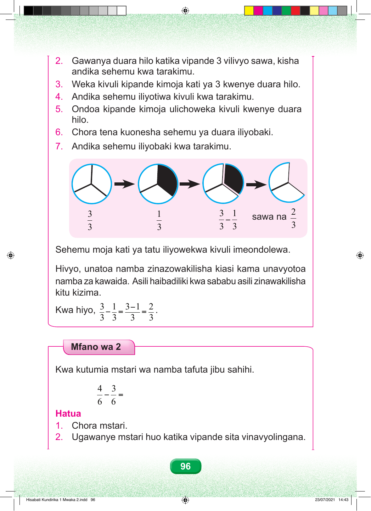

2. Gawanya duara hilo katika vipande 3 vilivyo sawa, kisha andika sehemu kwa tarakimu. 3. Weka kivuli kipande kimoja kati ya 3 kwenye duara hilo. 4. Andika sehemu iliyotiwa kivuli kwa tarakimu. 5. Ondoa kipande kimoja ulichoweka kivuli kwenye duara hilo. 6. Chora tena kuonesha sehemu ya duara iliyobaki. 7. Andika sehemu iliyobaki kwa tarakimu. 3 1 3 1 2 − sawa na 3 3 3 3 3 Sehemu moja kati ya tatu iliyowekwa kivuli imeondolewa. Hivyo, unatoa namba zinazowakilisha kiasi kama unavyotoa namba za kawaida. Asili haibadiliki kwa sababu asili zinawakilisha kitu kizima. 3 1 3−1 2 Kwa hiyo, − = = . 3 3 3 3 Mfano wa 2 Kwa kutumia mstari wa namba tafuta jibu sahihi. 4 3 − = 6 6 Hatua 1. Chora mstari. 2. Ugawanye mstari huo katika vipande sita vinavyolingana. 96 Hisabati Kundirika 1 Mwaka 2.indd 96 23/07/2021 14:43